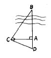
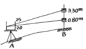
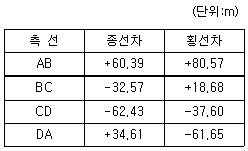
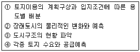

지적산업기사 (2002-08-11 기출문제)
1과목: 지적측량
1. 배각법으로 수평각을 관측할 때 처음 읽은 값이 59° 59' 04"이고 마지막으로 읽은 값이 179° 55'15"이면 몇 배각 인가?
- 2배각
- 3배각
- 4배각
- 5배각
(정답률: 알수없음)

2. 그림과 같이 하천을 낀 두점 AB간의 거리를 측정하기 위하여 AC및 AD를 측정하여 AC = 20m,AD = 11.4m를 얻었다. AB간의 거리는 얼마인가?

- 25.09m
- 35.09m
- 45.09m
- 55.09m
(정답률: 알수없음)
3. 지적삼각 보조측량을 교회법으로 시행할 경우 2개의 삼각형에서 발생하는 연결교차가 얼마일때 그 평균값을 취하는가?
- 0.30m
- 0.50m
- 0.80m
- 1.0m
(정답률: 알수없음)
4. 지적삼각보조측량을 교회법으로 시행할 경우에 대한 설명으로 틀린 것은?
- 반드시 3방향의 교회에 의한다.
- 점간 거리는 평균 1㎞내지 3㎞로 한다.
- 삼각형의 협각은 30° 이상 120° 이하로 한다.
- 전방교회법 또는 측방교회법에 의한다.
(정답률: 알수없음)
5. 지적삼각점의 수평각 측정은 3대회로 측정할 때 윤곽도는 다음 중 어느 것이 옳은가?
- 10° , 30° , 60°
- 0° , 60° , 120°
- 0° , 30° , 90°
- 0° , 60° , 180°
(정답률: 알수없음)
6. 측판측량법에 의한 세부측량을 도선법으로 할 경우 변수 제한에 대한 폐색오차의 최대허용범위는 다음 중 어느 것인가?
- 1.0㎜
- 1.5㎜
- 2.0㎜
- 2.5㎜
(정답률: 알수없음)
7. 평판측량에서 앨리데이드(Alidade)의 하시준공을 통하여 그림과 같이 관측했을때 AB간의 수평거리 D와 고저차 H의 값이 옳은 것은?

- D = 12.5m,H = 50.0m
- D = 20.0m,H = 10.5m
- D = 50.0m,H = 10.0m
- D = 50.0m,H = 12.5m
(정답률: 알수없음)
8. 지적 기술자의 직무범위에 대한 사항으로 옳은 것은?
- 지적산업기사는 지적 측량을 할 수 있다.
- 지적산업기사는 지적측량의 종합적 계획수립 업무에 종사한다.
- 지적기능사는 지적확정 측량을 할 수 있다.
- 지적기사는 지적관리의 개선등에 관한 기획 및 연구에 종사한다.
(정답률: 알수없음)
9. 세부측량 방법중 교회법으로 시행할 경우 교각으로 인한 오차가 가장 적은 것은?
- 30°
- 60°
- 90°
- 120°
(정답률: 알수없음)
10. 지적측량에 대한 설명으로 틀린 것은?
- 일필지 등록을 위한 특수측량이다.
- 기초측량과 세부측량으로 구분한다.
- 법률적 규제를 받는 귀속 측량이다.
- 토지측량과 건축측량으로 구분한다.
(정답률: 알수없음)
11. 전자면적계로 면적측정을 하는 경우 산출면적은 얼마까지 계산하는가?
- 1/10 m2
- 1/50 m2
- 1/500 m2
- 1/1000 m2
(정답률: 알수없음)
12. 측판측량방법으로 세부측량을 하는 경우 경계점은 기지점을 기준으로 지상경계선과 도상경계선의 부합여부를 확인할 수 있는 방법이 아닌 것은?
- 현형법
- 도상원호 교회법
- 거리비교 확인법
- 후방교회법
(정답률: 알수없음)
13. 도근측량에서 배각법으로 관측할 경우 1등도선의 폐색오차의 제한으로 맞는 것은?
- 20 √n 초이내
- 30 √n 초이내
- 10 √n 초이내
- 60 √n 초이내
(정답률: 알수없음)
14. 다각망도선법에 의하여 지적삼각보조측량을 실시할 경우 도선별 평균방위각과 관측방위각의 폐색오차는? (단, n은 폐색변을 포함한 변수)
- ± √n 초 이내
- ± 1.5√n 초 이내
- ± 10√n 초 이내
- ± 20√n 초 이내
(정답률: 70%)
15. 조준의를 사용하여 경사거리를 측정한 결과 경사분획이 12분획이었다. 이때 경사각도는?
- 6° 32′ 10″
- 6° 40′ 54″
- 6° 50′ 34″
- 6° 52′ 44″
(정답률: 알수없음)
16. 경위의측량방법으로 세부측량을 실시한 지역의 면적측정 방법으로 적당한 것은?
- 좌표면적계산법
- 전자면적계법
- 삼사법
- 푸라니미터법
(정답률: 알수없음)
17. 측량준비도 작성시 지적도 신축량의 기재는 다음중 얼마 이상인 경우에 기재하는가?
- 도곽선이 0.3mm 이상의 신축이 있을때
- 도곽선이 0.4mm 이상의 신축이 있을때
- 도곽선이 0.5mm 이상의 신축이 있을때
- 도곽선이 0.6mm 이상의 신축이 있을때
(정답률: 알수없음)
18. 일반원점지역에서 축척별 1도곽의 포용면적으로 맞는 것은?
- 축척 1/500은 20,000m2
- 축척 1/600은 40,000m2
- 축척 1/1000은 120,000m2
- 축척 1/1200은 150,000m2
(정답률: 알수없음)
19. 다음중 지적도의 재작성방법에 해당되지 않는 것은?
- 직접자사법
- 간접자사법
- 전자자동제도법
- 정밀복사법
(정답률: 알수없음)
20. 등록 전환할 토지가 있는 때에 토지소유자는 소관청에 신청하여야 하는데 신청기간으로 맞는 것은?
- 30일 이내
- 40일 이내
- 50일 이내
- 60일 이내
(정답률: 알수없음)
2과목: 응용측량
21. A점의 좌표가 (1200m, 2600m)이고, B점의 좌표가 (1140m, 2680m)인 AB 두점간을 연결하는 직선터널을 굴진하는 경우 이 터널의 경사거리는 얼마인가? ( 단, 두점간 고저차는 24.5m )
- 101.23 m
- 101.48 m
- 102.45 m
- 102.96 m
(정답률: 알수없음)
22. 지형도의 등고선 종류가 아닌 것은?
- 주곡선
- 계곡선
- 간곡선 및 조곡선
- 완곡선
(정답률: 알수없음)
23. 위성측량에서 GPS에 의하여 위치를 결정하는 기하학적인 원리는?
- 위성에 의한 평균계산법
- 위성기점 무선항법에 의한 후방교회법
- 수신기에 의하여 처리하는 자료해석법
- GPS에 의한 폐합도선법
(정답률: 알수없음)
24. A점의 표고가 100m, B점의 표고가 120m 인 두 지점간 4% 도로를 건설시 AB간의 도로의 경사거리는 얼마인가?
- 500.4m
- 500.5m
- 400.2m
- 400.5m
(정답률: 알수없음)
25. 다음중 노선곡선 설치와 직접 관계가 없는 것은 어느 것인가?
- 편각 설치법
- 캔트
- 지반고
- 교점(I.P)
(정답률: 알수없음)
26. 다음은 1라디안에 대한 설명이다. 맞는 것은?
- 반경 R
- 2π
- π /180°
- 57° 17＇45＂
(정답률: 알수없음)
27. 캔트(Cant)의 계산에서 곡선반지름을 2배로 하면 캔트는 몇배가 되는가?
- 2 배
- 4 배
- 1/2 배
- 1/4 배
(정답률: 알수없음)
28. 갱내 고저차 측량에서 천정에 측점이 설치되었다. ＡＢ간의 사거리가 60ｍ이고, 기계고가 1.90ｍ, 시준고 1.60ｍ, 연직각이 3° 일 때 측점 ＡＢ사이의 고저차는?
- 1.84ｍ
- 2.84ｍ
- 1.48ｍ
- 2.48ｍ
(정답률: 알수없음)
29. 직선부에서 곡선부에 고속차량이 주행할 경우,안전하고 원활히 통과할 수 있도록 하기 위하여 설치하는 곡선은?
- 단곡선
- 접선
- 절선
- 완화곡선
(정답률: 70%)
30. 폐합도선의 종/횡선차가 다음 표와 같을 때 전체의 면적을 구한 값은?

- 4451m2
- 4461m2
- 4455m2
- 4465m2
(정답률: 알수없음)
31. 완화곡선의 선형으로 그 성질과 용도가 맞게된 것은?
- 3차 포물선 - 곡률반경이 완화곡선의 시점에서의 횡거에 반비례하고 철도에 널리 사용한다.
- 렘니스케이트 - 3차 포물선 보다 완만하지만 클로소이드보다 급하여 지하철에 유리하다.
- 클로소이드 - 곡률반경이 곡선장에 비례하는 나선으로 도로에 많이 쓴다.
- 직선과 단곡선을 연결하는 완화곡선의 곡률반경은 완화곡선 시점에서 무한대이고 중간에서는 원의 반지름과 동일하게 변한다.
(정답률: 알수없음)
32. 축척 1/10,000로 촬영된 수직 공중사진으로 판독할 때 다음 중에서 가장 구별하기 어려운 것은 어느 것인가?
- 철도와 포장도로
- 산의 능선과 곡선
- 논둑길과 용수로
- 우체국과 읍.면사무소
(정답률: 알수없음)
33. 급경사의 연직각을 정위 망원경부 트랜싯으로 -45° 32＇50＂를 측정하고 측점간 사거리를 65.48미터 측정하였다. 이때에 주망원경과 정위 망원경과의 수직거리가 10센치미터 떨어져 있다면 진 북각은 몇도인가?
- -45° 27＇35＂
- -45° 29＇⑤＂
- 45° 29＇07＂
- 45° 38＇⑤＂
(정답률: 알수없음)
34. 레벨(Level)의 점검 및 조정에 있어서 가장 엄밀하게 실시해야 하는 것은?
- 연직축과 기포관축이 직교할 것
- 시준선과 기포관축이 나란할 것
- 십자선과 횡선과의 수평일 것
- 시준선과 삼각대
(정답률: 알수없음)
35. 카메라의 화면거리 150㎜,촬영경사 3그레이드(Grade)로 평지를 촬영한 항공사진이 있다. 이 사진의 등각점이 주점보다 최대경사선상 몇 mm인 곳에 있는가?
- 1.8 mm
- 2.4 mm
- 2.8 mm
- 3.5 mm
(정답률: 알수없음)
36. 다음 중 높이의 차와 시차차의 크기에 대한 관계를 맞게 나타낸 것은?
- 비례한다.
- 반비례한다.
- 제곱에 비례한다.
- 제곱에 반비례한다.
(정답률: 알수없음)
37. 지형도 제작에 사용할 사진으로 가장 이상적인 것은?
- 수평 항공사진
- 수직 항공사진
- 고경사 항공사진
- 지상사진
(정답률: 알수없음)
38. 엄밀 수직사진으로 수정하는 작업 조건중 소실점 조건은 무엇인가?
- 기하학적조건
- 샤임플러그 조건
- 광학적 조건
- 뉴톤렌즈 조건
(정답률: 알수없음)
39. 다음중 1등 수준점이 주로 설치되어 있는 위치는?
- 국도를 따라 설치되어 있다.
- 시통이 잘 되는 산 정상에 설치되어 있다.
- 하천을 따라 설치되어 있다.
- 행정경계를 따라 설치되어 있다.
(정답률: 알수없음)
40. 다음 사항중 지형측량 순서가 바르게 된 것은?
- 측량계획 - 측량도작성 - 세부측량 - 도근측량
- 측량도작성 - 세부측량 - 측량계획 - 도근측량
- 도근측량 - 세부측량 - 측량계획 - 측량도작성
- 측량계획 - 도근측량 - 세부측량 - 측량도작성
(정답률: 알수없음)
3과목: 토지정보체계론
41. 각 국가와 관련된 도시계획 제도로서 관계가 먼 것은?
- 영국-구조계획
- 독일-지구상세계획
- 미국-전원도시개발
- 일본-수도권정비법
(정답률: 알수없음)
42. 우리 나라의 도시기본계획의 수립기간은?
- 3년
- 5년
- 10년
- 20년
(정답률: 알수없음)
43. 위성도시와 전원도시의 가장 큰 차이점은 무엇인가?
- 도시의 인구규모
- 도시의 자급자족여부
- 도시의 녹지공간의 확보 여부
- 도시의 자치권 유무
(정답률: 알수없음)
44. 환지방식의 도시개발사업에 충당하기 위해 유보된 토지는?
- 유보지
- 계획지
- 보상지
- 체비지
(정답률: 알수없음)
45. 도시계획에서 가장 중요한 자료로서 모든 공간계획의 기준이 되는 것은?
- 토지이용
- 교통
- 인구
- 산업
(정답률: 알수없음)
46. 도시의 인구성장이 초기에는 완만하다가 일정기간이 지나면 급속한 증가율을 나타내고, 또 일정기간이 지나면 그 증가율이 점차 감소하여 결국에는 인구가 일정수준을 유지하는 인구성장 경로를 분석하는 데 적합한 방법은?
- 로지스틱 곡선법
- 최소자승법
- 지수함수법
- 등비급수법
(정답률: 알수없음)
47. 도로에 관한 사항 중 맞지 않는 항목은?
- 보행자 전용도로란 폭 1.5m이상으로 쾌적한 보행환경을 제공하는 것이다.
- 도로의 기능별 구분은 주간선도로→ 보조간선도로→국지도로→ 집산도로의 순으로 구별된다.
- 중로란 25m미만의 도로를 지칭한다.
- 소로란 12m미만의 도로를 지칭한다.
(정답률: 알수없음)
48. 경제기반모형의 특징에 대한 설명으로 틀린 것은?
- 이해하기가 쉬워 많이 이용된다.
- 자료구득이 어렵다.
- 기본 가정에 무리가 많다.
- 수출량의 변동시기와 이유를 설명하지 못한다.
(정답률: 알수없음)
49. 우리 나라의 용도지역지구제에서 지역의 분류에 속하지 않는 것은?
- 주거지역
- 상업지역
- 공업지역
- 혼합지역
(정답률: 알수없음)
50. 공동구의 장점으로 거리가 먼 것은?
- 건설비가 저렴하다.
- 유지관리 및 수리의 용이하다.
- 노면 굴착에 의한 교통장애를 제거할 수 있다.
- 노상 공작물의 철거로 노면의 이용가치가 증대된다.
(정답률: 알수없음)
51. 도시기본계획을 수립하는데 가장 먼저 해야 할 작업은?
- 계획목표설정
- 기초조사
- 세부계획작성
- 계획지표설정
(정답률: 알수없음)
52. 다음중 시가지 형태가 성운상인 도시는?
- 서울
- 부산
- 대전
- 마산
(정답률: 알수없음)
53. 어느도시의 인구추정을 하였더니 산업취업률이 40%이고 그중 제조업에 종사하는 자는 6만이었다. 산업인구중 제조업 인구 구성비가 75%이면 그 도시의 총 인구는?
- 15만
- 18만
- 20만
- 25만
(정답률: 알수없음)
54. 도시의 장래 성격과 특성을 결정하는데 있어서 고려해야할 사항으로서 관계가 가장 적은 것은?
- 도시의 인구성장 추세
- 도시의 입지조건
- 도시의 역사적인 발전과정
- 지방권에서 도시가 담당하여야할 역할
(정답률: 알수없음)
55. 도시재개발을 개발형태에 따라 3가지 형태로 구분할 때 이에 포함되지 않는 것은?
- 철거재개발
- 수복재개발
- 보전재개발
- 배치재개발
(정답률: 알수없음)
56. 도시기본계획 수립에 있어서 가장 우선적으로 고려해야할 사항은?
- 토지이용계획
- 공원녹지계획
- 공공처리시설계획
- 교통계통계획
(정답률: 알수없음)
57. 토지의 이용계획의 작업과정이다. 순서가 옳은 것은?

- ②-③-④-①
- ③-②-④-①
- ④-②-③-①
- ①-④-②-③
(정답률: 알수없음)
58. 근린공원의 유치거리로 가장 적당한 것은?
- 2 ∼ 2.5km
- 2.5 ∼ 3.0km
- 1.6 ∼ 2.0km
- 0.5 ∼ 1km
(정답률: 알수없음)
59. Adikes법에 의해 도시 교외(郊外)의 광대한 토지를 시에서 소유하는 토지정책을 세웠던 나라는?
- 독일
- 미국
- 영국
- 프랑스
(정답률: 알수없음)
60. 환지를 지정하거나 그 대상에서 제외한 경우에 그 과부족 분에 대하여 금전으로 청산한다. 이때 고려치 않아도 되는 항목은?
- 종전의 토지 및 환지의 위치
- 종전의 지역
- 종전의 면적
- 종전의 소유자
(정답률: 알수없음)
4과목: 지적학
61. 다음 중 지적의 기능으로 관련이 적은 것은?
- 토지소유권이 미치는 한계를 밝히는 기능
- 효율적인 토지관리의 기능
- 소유권이외의 권리관계의 등기 기능
- 토지의 특성적 표시 기능
(정답률: 알수없음)
62. 다음 중 신규등록의 대상토지가 아닌 것은?
- 미등록 도서
- 공유수면 매립지
- 미등록 도로, 하천, 구거
- 개간한 임야
(정답률: 알수없음)
63. 다음 중 지번의 역할에 해당하지 않는 것은?
- 토지의 개별화
- 토지의 위치 추정
- 토지등록의 단위
- 필지규모의 추정
(정답률: 알수없음)
64. 새로이 측량하여 경계를 정하여야 하는 사항이 아닌 것은 ?
- 경계정정
- 등록전환
- 면적정정
- 신규등록
(정답률: 알수없음)
65. 토지 등록의 제원칙과 관계가 없는 것은?
- 형식적심사의 원칙
- 특정화의 원칙
- 신청의 원칙
- 공시의 원칙
(정답률: 알수없음)
66. 지적제도의 발달 단계별 특징과의 관계가 옳지 않은 것은?
- 세지적 - 생산물량
- 법지적 - 토지 상품화
- 소유권지적 - 토지 소유권 공시
- 다목적지적 - 부동산 종합 권리 공시
(정답률: 알수없음)
67. 모든 토지를 지적공부에 등록하고 등록된 토지 표시는 항상 실제와 같게 유지하는 지적제도의 등록 형식은?
- 소극적 등록주의
- 적극적 등록주의
- 형식적 심사주의
- 당사자 신청주의
(정답률: 알수없음)
68. 우리나라 지번설정시의 일반원칙에 해당되지 않는 것은?
- 지번설정지역별 기번(起番)원칙
- 북서기번원칙
- 분수숫자지번방식
- 지번의 부번(附番)원칙
(정답률: 알수없음)
69. 다음에서 임야가 아닌 것은?
- 채석장
- 간석지
- 암석지
- 황무지
(정답률: 알수없음)
70. 공유수면 매립지에서 제방을 편입하여 등록하는 경우에 일반적인 경계 측정의 기준은?
- 최대만수(조)면
- 제방외측 어깨부
- 제방내측 어깨부
- 제방내측 하단부
(정답률: 알수없음)
71. 일필지의 성립요건으로 동일하지 않아도 되는 것은?
- 지번 설정 지역
- 지목
- 토지 등급
- 소유자
(정답률: 알수없음)
72. 지번색인표에 대한 설명 중 맞는 것은?
- 지번색인표는 일종의 지적공부이다.
- 지번색인표는 당해 지번 설정지역의 지적도 축척의 1/10을 기준으로 한다.
- 지번색인표는 도면의 관리상 필요한 경우 지번 설정 지역별로 작성, 비치할 수 있다.
- 지번색인표는 일람도별로 작성하지 않는다.
(정답률: 알수없음)
73. 경국대전에서 매 20년마다 토지를 개량하여 양안을 작성토록 규정하고 있다. 이 양안의 역할은?
- 가옥규모 파악
- 세금징수
- 상시 소유자 변경 등재
- 토지거래
(정답률: 알수없음)
74. 토지를 지적공부에 등록하므로서 발생하는 효력으로 타당치 않은 것은?
- 창설의 효력
- 추정의 효력
- 형성의 효력
- 대항의 효력
(정답률: 알수없음)
75. 지목에 대한 설명 중 타당하지 않은 것은?
- 지목의 결정은 소관청이 한다.
- 지목의 결정은 행정처분에 속하는 것이다.
- 토지소유자의 신청이 없어도 지목을 결정할 수 있다.
- 토지소유자의 신청이 있어야만 지목을 결정한다.
(정답률: 알수없음)
76. 다음 중 토지의 경계를 도면으로 표시하는 지적제도는?
- 수치지적
- 세지적
- 도해지적
- 법지적
(정답률: 알수없음)
77. 다음 중 사출도(四出道)란 토지구획방법을 시행한 고대 국가는?
- 부여
- 고조선
- 옥저
- 고려
(정답률: 알수없음)
78. 토지의 보존등기를 할 때 소유권의 존재에 관하여 증빙서로 하고 있는 것은?
- 공증서
- 임야조사부
- 임야대장
- 등기공무원의 조사서
(정답률: 알수없음)
79. 토지조사사업 당시 사정의 효력은?
- 사법처분
- 행정처분
- 확정판결
- 의결처분
(정답률: 알수없음)
80. 지번의 설명 중 타당치 않은 것은?
- 토지의 이용
- 토지의 성명
- 토지의 특정요소
- 토지의 개수
(정답률: 알수없음)
5과목: 지적관계
81. 건폐율 및 용적률에 관한 설명으로 옳지 않은 것은?
- 건축물 주위에 최소한의 공간을 확보하기 위하여 건폐율을 제한한다.
- 건축물 연면적의 대지면적에 대한 비율을 용적률이라 한다.
- 용적률을 구하는 목적은 토지이용의 합리화를 꾀하는 데 있다.
- 지역의 지정이 없는 구역에 대해서는 인근지역의 건폐율을 적용한다.
(정답률: 알수없음)
82. 다음 중 부동산 등기법상 「등기능력」이 있는 것은?
- 권리질권
- 부동산점유권
- 부동산유치권
- 특수지역권
(정답률: 알수없음)
83. 공유지연명부의 등록사항이 아닌 것은?
- 소유자의 성명 또는 명칭
- 토지의 면적
- 토지의 소재
- 소유권지분
(정답률: 알수없음)
84. 등기촉탁을 한 경우 소관청이 토지소유자에게 하는 지적 정리통지는 등기필증이 접수된 날로부터 며칠내로 하는가?
- 5일 이내
- 15일 이내
- 30일 이내
- 60일 이내
(정답률: 알수없음)
85. 지적기술자 및 지적기능자에게 할 수 있는 징계의 종류로 맞지 않는 것은?
- 자격취소
- 견책
- 감봉
- 1월이상 3년이하의 자격정지
(정답률: 알수없음)
86. 다음 중 합유에 관한 설명으로 옳지 않은 것은?
- 합유자의 권리는 합유물 전부에 미친다.
- 합유물의 보존행위는 각자가 할 수 있다.
- 합유지분은 합유자 과반수의 합의로 처분할 수 있다.
- 합유로 물건을 소유한 자는 합유물의 분할을 청구할 수 없다.
(정답률: 알수없음)
87. 다음 중 토지의 이동에 해당하는 것은?
- 토지소유자의 주소 변경
- 신규 등록
- 토지등급 및 수확량 등급
- 임야의 분할
(정답률: 알수없음)
88. 녹지공간의 보전을 해치지 않는 범위내에서 제한적 개발이 불가피한 경우 지정하는 지역은?
- 보전녹지지역
- 자연녹지지역
- 생산녹지지역
- 개발제한구역
(정답률: 알수없음)
89. 다음 중 현행 부동산등기법상 등기를 할 수 없는 권리는?
- 소유권
- 지상권
- 임차권
- 점유권
(정답률: 알수없음)
90. 우리 민법상 법인은 언제 권리능력을 취득하는가?
- 정관 작성시
- 주무관청의 허가시
- 실질적 업무의 개시시
- 설립등기시
(정답률: 알수없음)
91. 국토이용관리법상 토지거래계약 허가구역의 지정에 관하여 틀린 설명은?
- 허가구역은 건설교통부장관이 지정, 공고한다.
- 허가구역의 지정은 국토이용계획심의회의 심의를 거쳐야 한다.
- 허가구역 지정의 효력은 지정을 공고한 날로부터 5일이 경과한 날부터 발생한다.
- 허가구역의 지정에 대한 통지를 받은 시장 또는 군수는 이를 30일간 일반인에게 공고해야 한다.
(정답률: 알수없음)
92. 도시계획의 입안권자에 해당되지 않는 것은?
- 특별시장
- 광역시장
- 건설교통부장관
- 도시계획구역을 관할하는 자치구 구청장
(정답률: 알수없음)
93. 건설교통부장관· 도지사· 시장· 군수· 구청장이 국토이용 계획에 관한 조사· 측량을 위하여 필요한 때에는 타인이 점용하는 토지에 출입할 수 있는데, 옳지 못한 내용은?
- 필요한 경우 소유자나 점유자 또는 관리인의 동의를 얻어 장애물을 제거할 수 있다.
- 토지의 점유자는 정당한 사유없이 국토이용계획에 관한 조사· 측량을 방해할 수 없다.
- 장애물의 소유자 또는 점유자나 관리인의 주소가 불명하여 장애물 제거에 대한 동의를 얻지 못했을 때 임의적으로 장애물을 제거하며 국토이용계획임무를 수행할 수 있다.
- 타인이 점용하는 토지에 출입하고자할 때 출입할 날의 3일전까지 토지 소유자 또는 점유자나 관리인에게 그 일시와 장소를 통보한다.
(정답률: 알수없음)
94. 현재 토지대장상의 등록사항이 아닌 것은?
- 지목
- 고유번호
- 토지등급
- 면적
(정답률: 알수없음)
95. 소관청이 축척변경에 따른 청산금의 결정을 공고한 날로부터 토지소유자에게 청산금의 납부고지에 대한 통지를 하여야 할 기간은?
- 7일이내
- 10일이내
- 14일이내
- 20일이내
(정답률: 알수없음)
96. 신규등록할 토지의 대상이 아닌 것은?
- 지적공부에 등록하지 아니한 토지
- 공유수면 매립지
- 등록되지 않은 도서
- 임야대장에 등록할 지목이외의 토지로 변한 토지
(정답률: 알수없음)
97. 광역도시계획의 수립절차와 관계 없는 것은?
- 기초조사
- 승인신청
- 중앙도시계획위원회의 심의
- 계획수립 고시
(정답률: 알수없음)
98. 지적법의 목적이라 볼 수 없는 것은?
- 토지를 지적공부에 등록하는 절차의 규정
- 부동산등기에 관한 사항을 규정
- 효율적인 토지 관리
- 토지소유권의 보호
(정답률: 알수없음)
99. 지적기술자에 대하여 시·도지사 또는 소관청이 행정자치부 장관에게 징계 요구를 할 수 있는 경우에 해당되지않는 것은?
- 고의 또는 중대한 과실로 지적측량을 잘못한 경우
- 지적관계법령의 규정에 위반한 경우
- 감봉처분을 받은자가 지적측량을 실시한 때
- 지적기술자로서의 명예를 훼손한 때
(정답률: 알수없음)
100. 다음의 지적관련 법령 변천순서가 맞는 것은?
- 토지조사령→ 지세법→ 지세령→ 토지대장규칙
- 토지조사법→ 토지조사령→ 토지대장규칙→ 지세령→ 지세법
- 토지조사법→ 지세법→ 토지조사령→ 토지대장규칙→ 지세령
- 토지조사령→ 지세령→ 토지대장규칙→ 지세법
(정답률: 알수없음)
처음 읽은 값: 59° 59' 04" = 59 × 60 × 60 + 59 × 60 + 4 = 215844초
마지막으로 읽은 값: 179° 55' 15" = 179 × 60 × 60 + 55 × 60 + 15 = 647115초
이제 두 값의 차이를 구하면,
647115 - 215844 = 431271초
이 값이 몇 배각인지 구하기 위해서는 360°를 몇 등분하는지 알아야 한다. 배각은 360°를 n 등분한 것이므로, 다음과 같은 식이 성립한다.
n × 360° = 측정한 각도의 총 변화량
따라서,
n = 측정한 각도의 총 변화량 ÷ 360°
= 431271 ÷ 360
≈ 1197.975
즉, 측정한 각도는 약 1198배각이다. 이 값은 3배각, 4배각, 5배각 등으로 정수로 나누어 떨어지지 않으므로, 정답은 "3배각"이다.
이유는 간단하다. 배각으로 측정한 각도는 360°를 n 등분한 값이므로, n이 정수가 아니면 정수로 나누어 떨어지지 않는다. 따라서 3배각, 4배각, 5배각 등으로 나누어 떨어지지 않는 경우는 모두 배각이 아니다.